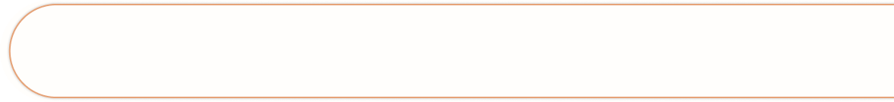

<!-- <!DOCTYPE html>
<html lang="en">
<head>
    <meta charset="UTF-8">
    <meta name="viewport" content="width=device-width, initial-scale=1.0">
    <title>Document</title>

    <style>
        * {
            margin: 0;
            padding: 0;
            box-sizing: border-box;
        }

        body {
            font-family: sans-serif;
            line-height: 1.6;
        }

        /* Hero Section (首頁大圖區) */
        .hero {
            position: relative;
            width: 100%;
            min-height: calc(100vw * 0.35208);
            overflow: hidden;
        }

        .hero-bg {
            position: absolute;
            top: 0;
            left: 0;
            width: 100%;
            height: 100%;
            object-fit: cover;
            /* 恢復背景色，圖片載入失敗時會有淺灰色 */
            background-color: #fefefe; 
            z-index: 0;
        }

        /* 導覽列 */
        nav {
        position: fixed;
        margin-top: 30px;
        margin-right: 200px;
        top: 30px;
        right: 20px;
        display: flex;
        gap: 80px;
        /* background: rgba(255, 255, 255, 0.8); */
        padding: 10px 20px;
        border-radius: 20px;
        z-index: 12;
        }
            nav a {
        text-decoration: none;
        color: #333;
        font-weight: bold;
        font-size: 2rem;
        }
        nav a:hover {
            color: #007BFF;
        }

        .hero-content-overlay {
            font-size: 2.5rem;
            position: absolute;
            top: 75%;
            left: 50%;
            transform: translate(-50%, -50%);
            z-index: 5;
            display: flex;
            flex-direction: column;
            align-items: center;
            gap: 20px;
            color: rgb(0, 0, 0);
            text-shadow: 2px 2px 4px rgba(0, 0, 0, 0.5);
        }


/* 新增的活動區塊樣式 */
.activity-section {
    position: relative;
    width: 100%;
    min-height: calc(100vw * 1.6026); /* 保持這個比例 */
    background-size: cover;
    background-position: center center;
    background-repeat: no-repeat;
    display: flex;
    justify-content: center;
    align-items: center;
    padding: 60px 20px;
    box-sizing: border-box;
    color: #333;
}

.activity-grid-container {
    display: grid;
    grid-template-columns: repeat(3, 1fr);
    grid-template-rows: repeat(4, auto);
    gap: 40px; /* 增加網格項目之間的間距，讓整體看起來更寬敞 */
    max-width: 1400px; /* **關鍵調整：將最大寬度從 1200px 增加到 1400px** */
    width: 100%;
}

.grid-item {
    background-color:#DDCD96;
    border-radius: 10px;
    padding: 25px; /* 增加內邊距，讓內容有更多空間 */
    text-align: center;
    box-shadow: 0 4px 8px rgba(0, 0, 0, 0.1);
    display: flex;
    flex-direction: column;
    align-items: center;

     /* 新增過渡效果，讓動畫平滑 */
    transition: transform 0.3s ease, box-shadow 0.3s ease;
}

.grid-item:hover {
    background-color: rgba(248, 248, 248, 0.95); /* 懸停時的淺藍色背景 */
    /* 或者你可以嘗試其他顏色，例如： */
    /* background-color: #f0f0f0; /* 淺灰色 */
    /* background-color: #e6f7ff; /* 更亮的淺藍 */

    box-shadow: 0 8px 16px rgba(0, 0, 0, 0.2); /* 懸停時加深陰影 */
    transform: translateY(-5px); /* 輕微上浮效果，增加互動感 */
}


.grid-item img {
    max-width: 360px;
    height: 100%; /* **關鍵調整：增加圖片高度，讓格子看起來更高** */
    object-fit: cover;
    border-radius: 8px;
    margin-bottom: 20px; /* 增加圖片下方間距 */
    
}

.grid-item img {
    max-width: 360px;
    height: 100%;
    object-fit: cover;
    border-radius: 8px;
    margin-bottom: 20px;

    transition: transform 0.3s ease; /* 為圖片的變形添加過渡 */
}

.grid-item:hover img {
    transform: scale(1.03); /* 圖片輕微放大 3% */
    /* 或者 transform: translateY(-5px); 讓圖片輕微上移 */
}

.grid-item h5 {
    font-size: 1.5rem; /* 稍微放大標題字體 */
    color: black;
    margin-bottom: 12px;
}

.grid-item p {
    font-size: 1rem; /* 稍微放大內文字體 */
    color: #555;
    line-height: 1.6; /* 增加行高，讓文字更易讀 */
}

.separator-line {
    width: 100%; /* 線條寬度，可以調整 */
    height: 10px; /* 線條粗細 */
    background-color: black; /* 線條顏色 */
    margin: 15px auto; /* 上下間距為 15px，左右自動置中 */
    border-radius: 5px; /* 讓線條邊角稍微圓潤 */
}

/* --- Footer Styles --- */
.main-footer {
    background-color: #333; /* 深灰色背景 */
    color: #f4f4f4; /* 淺色文字 */
    padding: 60px 20px 20px; /* 上下內距，底部內距小一些給版權資訊 */
    font-size: 1rem;
    line-height: 1.8;
}

.main-footer .footer-content {
    display: flex;
    justify-content: space-around; /* 讓內容區塊平均分佈 */
    flex-wrap: wrap; /* 允許區塊換行 */
    max-width: 1200px; /* 與你的 section3, section4 內容寬度保持一致 */
    margin: 0 auto; /* 水平置中 */
    padding-bottom: 30px; /* 與版權資訊隔開 */
}

.main-footer .footer-section {
    flex: 1; /* 每個區塊彈性伸縮 */
    min-width: 250px; /* 最小寬度，防止壓縮過小 */
    margin: 20px; /* 區塊間距 */
}

.main-footer .footer-section h3 {
    color: #FFD700; /* 與你的 tag 顏色一致，或選一個亮色 */
    font-size: 1.5rem;
    margin-bottom: 20px;
    text-align: left;
}

.main-footer .footer-section p,
.main-footer .footer-section ul {
    text-align: left;
}

.main-footer .footer-section ul {
    list-style: none; /* 移除列表點 */
    padding: 0;
}

.main-footer .footer-section ul li {
    margin-bottom: 10px;
}

.main-footer .footer-section ul li a {
    color: #f4f4f4;
    text-decoration: none;
    transition: color 0.3s ease;
}

.main-footer .footer-section ul li a:hover {
    color: #007BFF; /* 滑鼠懸停效果 */
}

.main-footer .footer-section.contact p {
    display: flex;
    align-items: center;
    margin-bottom: 10px;
}

.main-footer .footer-section.contact i {
    margin-right: 10px;
    color: #FFD700; /* 圖示顏色 */
}

.main-footer .footer-bottom {
    text-align: center;
    padding-top: 20px;
    border-top: 1px solid rgba(255, 255, 255, 0.1); /* 頂部邊線 */
    color: #aaa; /* 淺灰色版權文字 */
    font-size: 0.9rem;
}

/* 響應式設計調整 */
@media (max-width: 1024px) {
    .activity-grid-container {
        gap: 30px; /* 平板模式下的間距 */
    }
    .grid-item img {
        height: 180px; /* 平板模式下圖片高度 */
    }
    .grid-item h5 {
        font-size: 1.2rem;
    }
    .grid-item p {
        font-size: 0.95rem;
    }
}

@media (max-width: 767px) {
    .activity-grid-container {
        gap: 20px; /* 手機模式下的間距 */
    }
    .activity-section {
        padding: 30px 15px; /* 手機模式下調整內邊距 */
    }
    .grid-item img {
        height: 140px; /* 手機模式下圖片高度 */
    }
    .grid-item h5 {
        font-size: 1rem;
    }
    .grid-item p {
        font-size: 0.85rem;
    }
}

.hero .navbg{
    position: fixed;
    right: 0;
    top: 30px;
    z-index: 11;
}

.hero .logo {
    position: absolute;
    left: 0;
    top: 0;
    z-index: 13;
}


    </style>

</head>
<body>

    <header class="hero">
        <div class="logo">
        
    </div>
        
        <nav>
            <a href="#">動物旅便帖</a>
            <a href="#">季節活動</a>
            <a href="#">動物伴手禮</a>
            <a href="#">關於本站</a>
        </nav>

        <div class="hero-content-overlay">
            <h2 class="overlay-title">活動快訊</h2>
        </div>

        <div class="navbg">
        
    </div>
    </header>

     <section class="activity-section" style="background-image: url('img/page31.png');">
        <div class="activity-grid-container">
            <div class="grid-item">
                
                <div class="separator-line"></div><h5>夏季動物園派對</h5>
                <p>炎炎夏日，與動物們一起狂歡！多樣互動遊戲等你來體驗。</p>
            </div>
            <div class="grid-item">
                
                 <div class="separator-line"></div><h5>夜間探索營</h5>
                <p>提燈夜遊，一窺夜行動物的神秘世界，體驗獨特的動物之夜。</p>
            </div>
            <div class="grid-item">
                
                 <div class="separator-line"></div><h5>鳥類遷徙季</h5>
                <p>跟隨專業導覽，觀察候鳥遷徙的壯麗景象，了解鳥類生態。</p>
            </div>

            <div class="grid-item">
                
                 <div class="separator-line"></div><h5>海洋生物日</h5>
                <p>探索海洋，認識多種海洋生物，更有精彩的餵食秀！</p>
            </div>
            <div class="grid-item">
                
                 <div class="separator-line"></div><h5>動物攝影工作坊</h5>
                <p>學習捕捉動物最美的一瞬間，專業攝影師現場指導。</p>
            </div>
            <div class="grid-item">
                
                 <div class="separator-line"></div><h5>與草泥馬的午後</h5>
                <p>近距離接觸溫馴的草泥馬，享受悠閒的互動時光。</p>
            </div>

            <div class="grid-item">
                
                 <div class="separator-line"></div><h5>爬蟲類特展</h5>
                <p>多種爬行動物，挑戰你的膽量，了解牠們的生存智慧。</p>
            </div>
            <div class="grid-item">
                
                 <div class="separator-line"></div><h5>小動物餵食體驗</h5>
                <p>親手餵食可愛的小動物，感受牠們對你的信任與依賴。</p>
            </div>
            <div class="grid-item">
                
                 <div class="separator-line"></div><h5>生態講座系列</h5>
                <p>邀請專家分享動物保育知識，提升對自然環境的認識。</p>
            </div>

            <div class="grid-item">
                
                 <div class="separator-line"></div><h5>猛獸區導覽</h5>
                <p>深入猛獸區，在安全距離下觀察大型貓科動物的英姿。</p>
            </div>
            <div class="grid-item">
                
                 <div class="separator-line"></div><h5>蝴蝶生態園</h5>
                <p>漫步繽紛的蝴蝶園，感受蝴蝶在指尖翩翩起舞的夢幻。</p>
            </div>
            <div class="grid-item">
                
                 <div class="separator-line"></div><h5>動物明星見面會</h5>
                <p>與園區的明星動物近距離接觸，了解牠們的獨特個性。</p>
            </div>
        </div>
    </section>

    <footer class="main-footer">
    <div class="footer-content">
        <div class="footer-section about">
            <h3>關於我們</h3>
            <p>動物旅行帶你探索日本各地最獨特的動物天堂，從北狐到梅花鹿，與大自然中的可愛朋友們親密接觸。</p>
        </div>
        <div class="footer-section links">
            <h3>快速連結</h3>
            <ul>
                <li><a href="#">首頁</a></li>
                <li><a href="#">行程介紹</a></li>
                <li><a href="#">動物介紹</a></li>
                <li><a href="#">最新消息</a></li>
                <li><a href="#">聯絡我們</a></li>
            </ul>
        </div>
        <div class="footer-section contact">
            <h3>聯絡我們</h3>
            <p><i class="fas fa-map-marker-alt"></i> 台灣桃園市觀音區</p>
            <p><i class="fas fa-phone"></i> +886-XXX-XXXXXX</p>
            <p><i class="fas fa-envelope"></i> info@animaltravel.com</p>
        </div>
    </div>
    <div class="footer-bottom">
        &copy; 2025 動物旅行. All rights reserved.
    </div>
</footer>

</body>
</html> -->